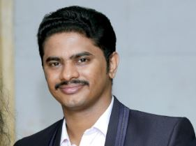

Sumanthu Sundaresan
Sumanthu Sundaresan is a highly qualified ITIL certified Engineer.
One Man. One Mission. Can He Go Beyond?One Man. One Mission. Can He Go Beyond?
Sumanthu Sundaresan is a highly qualified ITIL certified Engineer.
I am a versatile and skilled Professional with 9.4 Years of Experience as Application Engineer/Application support engineer in IT Industry with complete responsibility of investigating, monitoring & analyzing of Applications and infrastructures in Windows, Linux Platforms and have worked on various skills.
Sumanthu Sundaresan is a highly qualified ITIL certified Engineer.
Domain knowledge : Payment and Telecom Industry
Operating system : Windows and Linux
Version Control Tool : GIT
Configuration Management Tool : Ansible & Puppet
Server : IIS 6.0, 7.0, 7.5, Apache Tomcat
Database Knowledge : MS-SQL, MY-SQL, Oracle
Documentation Tool : CONFLUENCE
IT Ticketing Tools : BMC REMEDY, JIRA, Service Now, Service Desk.
Job scheduling Tool : CONTROL-M, Autosys, Sql Agent
Monitoring Tool : Kibana, Ops manager, SNMPC, ITRS, Tube map,
Testing Tool : SOAP, Express Profiler & Load Runner
Employer : Wirecard India Private Limited, Chennai, INDIA.
Client : Wirecard AG.
Team : Service Delivery Application Engineering Team
Designation : Application Engineer
Role : Deployment and Production Support Engineer [L2].
Tenure : Apr-2020 to till date.
Employer : Wirecard India Private Limited, Chennai, INDIA.
Client : Wirecard AG.
Team : Service Delivery Application Engineering Team
Designation : Application Engineer
Role : Deployment and Production Support Engineer [L2].
Tenure : Apr-2020 to till date.
RESPONSIBILITIES:
Providing L2.5 level of support for Payment & Risk applications and its infrastructure services hosted in different data centers across the globe.
Responsible in monitoring the complete Payment lifecycle/batch with Control-M batch scheduling tool.
Responsible for investigating the issues raised from various stakeholders by analyzing Application API calls, Database logs and Webserver logs.
Responsible for driving major production issue and taking it for fix with the help of respective teams and incident mangers.
Coordinating with DC operations team during disaster recovery testing and responsible for switching the traffic between DCs through F5 load balancer.
Coordinating with release management team on releases headed by Application teams and responsible for performing post release validations and configuring
monitoring alerts in the respective tools.
Analyzing daily operational activities and automate them with the help of Run-Deck.
Employer : Virtusa Consulting Pvt Ltd, Chennai, INDIA
Client : Citi Bank
Team : ICG –MHS
Designation : Team Lead
Role : Managing Daily activity of L1.5 Support
Tenure : May-2018 to Mar-2020.
RESPONSIBILITIES: * Drives daily production activities with effective communication and leadership * Creates incident related performance analysis and reporting for review by IT management * Scheduling a job using Autosys, Jill Validation and modification, Show Notes deployment as per the requirement. * Triggering a daily Batches in mainframe Z/OS * Performing Promotion and Demotion activity as per the requirement. * Performing Table creation and modification in SQL Database. * Ensure that the incident management process is followed and that incident and problem records accurately reflect actions taken to restore service and that changes to Configuration Items are recorded * Minimize disruption to our business by efficiently identifying incident causes and determining the right course of actions leading to incident closure. * Having weekly status call with the global clients. * Take the lead role in service restoration, communication and root cause identification. * Define key performance indicators and report appropriate incident metrics. * Acting as point of contact for any technical issues within a team.
Employer : Virtusa Consulting Pvt Ltd, Chennai, INDIA
Client : Citi Bank
Team : ICG –MHS
Designation : Team Lead
Role : Managing Daily activity of L1.5 Support
Tenure : May-2018 to Mar-2020.
RESPONSIBILITIES:
Drives daily production activities with effective communication and leadership
Work with other teams to identify improvement opportunities and ensure end-to-end success of the Incident Management process.
Creates incident related performance analysis and reporting for review by IT management
Scheduling a job using Autosys, Jill Validation and modification, Show Notes updation as per the requirement.
Triggering a daily Batches in mainframe Z/OS
Performing Promotion and Demotion activity as per the requirement.
Performing Table creation and modification in SQL Database.
Ensure that the incident management process is followed and that incident and problem records accurately reflect actions taken to restore service; and that changes
to Configuration Items are recorded
Minimize disruption to our business by efficiently identifying incident causes and determining the right course of actions leading to incident closure.
Having weekly status call with the global clients.
Take the lead role in service restoration, communication and root cause identification.
Define key performance indicators and report appropriate incident metrics.
Monitoring Incident Management team levels of performance against agreed quality standards and KPIs.
Acting as point of escalation for any technical issues within team